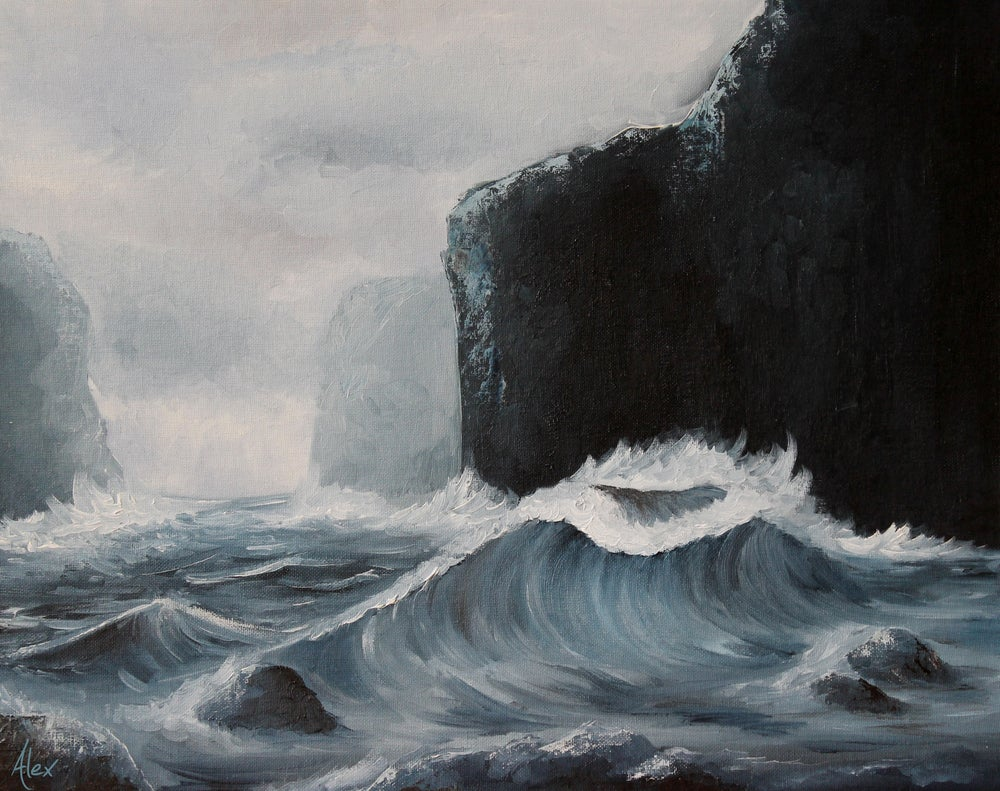

The General whipped her shoulders around 180 degrees, although she did not break her gaze with The Empress and allow her head to follow suit until a split second later. The corners of her mouth seemed to pull her chin toward her chest and her determined pupils became eclipsed by her open eyelids as her heavy boots propelled her toward the entrance of the hall. The Third Eye of Sable pitched forward slightly to keep up with it’s Seer. The whir of it’s levitator could be heard by the guards momentarily as it sailed in front of their faces.
“General!” The Empress stood from her seat behind the table. Sable did not alter the intensity of her march in any way. Her arms straightened in front of her and her palms collided with the double doors. Despite their weight, they also did not affect her march. Her Third Eye just snuck through the crack before they slammed behind them.
The silence left in the room from the sudden departure seemed to hang like a dense fog.
“Empress, she means well. She is representing her people just as her duty calls for.”
“Hush now Coda, this I am aware of.” Coda’s face pursed up as he gave an awkward fake-smile that said ‘Of course, your majesty.’ “I’m also not certain that I would not side with her people if I were in her place.” Somehow, it felt as though the fog became thicker.
“Your Majesty…”
“No.”
“Your Majesty?” She sighed and retreated to her chair.
“No, I am not changing position. No, I am not concerned about General Sable. She will carry out her orders. The offshore troops will report to the mainland, the transports will be refitted, and…” a sharp inhale, a long exasperated sigh, and a tilt of the head, “we will address the public and begin the evacuation process.” She took a hard gulp from her water glass and her swallow seemed to echo in the hall. “Dismissed.”
The officers slowly began rising from the table and gathering their things. Someone finally had the inclination to initiate small talk with his or her neighbor and a nervous buzz occupied the space. The Empress, however, remained frozen in the previous stillness, her gaze tied to the doors of the hall, her hand clenching her water glass. Only the buzz of an Eye behind her broke her trance. Her head flipped to reflect her abrupt return to consciousness. The Seer Celia stood behind her.
“Empress.” She nodded.
“Celia. I did not know you had returned.”
“I got back as the meeting was beginning. I stood in the balcony and observed so as not to disrupt the agenda.”
“So you heard the plans?”
“Yes Empress.”
“Do I have your support?”
“Empress, we need to talk.”
“I’m listening”
“May I ask that we retreat to your office for this discussion?”
The Empress stood and peered down into Celia’s eyes with a grave expression, understanding that this was vital information that she did not want to absorb. She motioned toward the door behind the table which lead directly to her workspace. The Third Eye of Celia turned in exact synchronization with it’s Seer as she made in that direction. The Empress took one more drink of water and sat the glass on the table as she followed. The door closed behind them and the air tingled as they experienced the realm of privacy.
“Report?” The Empress barked as she retreated behind the desk.
“Sire, the storm front is moving much faster than it ever has before. The models from the off-shore sensors are not even accurate as to the true intensity because the water level is so low in front of the storm that the sensors are not even collecting data from the upper atmosphere. Based on the data we collected, Sanbor will be destroyed in in approximately 35 days. It will be at the Capitol three days after that.”
“Thirty-five…” The Empress’s whispered voice trailed off as she felt her heart begin to pump blood into her brain to help her process the timeline.
“There’s one more thing, Sire.”
“Go on.”
“On our way back we flew over the mountains and scouted our path between here and there.” Celia stopped and broke eye contact.
“What is it, soldier?” The Empress did not like indirectness.
“It would appear that the Adamssons had a similar idea. A caravan was spotted ascending the pass.”
“Delfer pass?” The Empress quipped with disbelief.
“Yes Sire.”
The Empress looked away. A cocktail of anger, hatred, and anxiety poured from the orifices of her face and rose as a hazel steam over her eyes.
“They saw our Racers.”
“Excuse me?”
“They saw our Racers, Sire, and they showed no hostility.”
“Did they hail you?”
“They did, Sire.”
“Did you answer?”
“Of course not.”
“John Adamsson has some kind of nerve thinking he has any claim to the valley. The Delfer Treaty…”
“Sire, this storm is going to destroy all life west of the Mountains. The Treaty of Delfer has no meaning to the Adamssons any longer as their land doomed.”
The empress had not looked back at Celia. She was still.
“Sire, the world will be different from now on. If we survive this year’s storm, we will have to form new alliances and new treaties. We will have to immediately start thinking about how we will survive the storm front next year, and the year after that. For as long as humans have been recording history, the storm has never gotten weaker. This isn’t about finding a place to weather the storm front, this is about finding a new way to survive on this planet.”
The Empress turned now so that her back was to Celia. She waved her hand in front of her and the sensors in the room read her gestures. The curtain rose to reveal the floor-to-ceiling windows that looked out over the ocean. Nearly 700 years ago the Empress Ari had her quarters in this room, as per her design of the building. Each morning she would awaken and have her servants raise these same curtains and the vast ocean would fill her vision, a teal reflection of the morning sun, and the sea birds would dive before the cliffs that the palace sat perched on. That was a view that was to be reserved for the eyes of the noble Empress and her cabinet and it was very much a part of the lavishness that the monarchal Empresses of tradition were accustomed to.
But our Empress Prifor Deliahf was not a noble person (or perhaps she was, although no one paid attention to blood lines in this century) and she did not live lavishly. This palace was where she performed her duties, not where she lived. And she had not looked through these curtains since she had assumed the role four years previously. It was night time and the sea was black. The cliffs which were normally about 20 meters high at the peak of the dry season were now nearly triple the size and the surface of the ocean lay low at their feet. The Empress peered at the stars and seemed to peer past them, into the vastness of space.
“Indeed.” Her voice was low and virile. “This planet which giveth life dies under it’s oppression. And we the oppressors now look to the heavens and beg for mercy from an empty, pitiless universe.”
The Third Eye of Celia joined Deliahf at the window, hovering next to her with it’s camera trained on the nightscape. Celia was using it to share the Empress’s view without moving from in front of the desk. “Your daughter is right,” Celia offered. “The plan we have laid out right now is not going to work. We will lose many people.”
“General Sable is right more often than she is not.” The Empress said, still stargazing. “But what she possesses in intuition, she lacks in poise.”
Silence.
“What are you going to do?”
More silence. Curious of the Empress’s expression, and standing still directly behind her, Celia turned her Third Eye toward the leaders face. She was hoping for a look of confidence, or a demeanor that would convince the young Seer that the leader of her people had a plan. But this was not what Celia saw through the lens of the hovering biotech drone which was integrated into her consciousness.
The Empress Deliahf had her eye trained on something. Her face showed pure focus at this point.
“What is that?”
Celia was instantly at attention. She made a hand motion and the window pane slid open. The Eye of Celia shot forward at a speed that only imperial levitators could achieve.
“It looks like some kind of shock wave… Celia?”
After a short beat of silence the Empress turned. Celia’s corporal eyes were closed so she could focus through her Third.
“Soldier, report!”
Celia opened her eyes wide and said with terror and urgency “Take cover!”
No sooner had she offered this advice as her body became limp and her eyes rolled into her head as she dropped to the ground.
“Celia!”
The Empress turned and could see it clearly now. A giant shock wave that was flattening the ocean like an iron and racing toward the cliffs her vision focused on a seabird doing some night fishing. She saw the invisible wall approach it mid-flight and suddenly it disintegrated before her eyes.
Deliahfs pupils dilated as a new terror washed over her. “What in the world…”